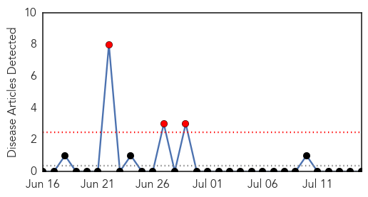
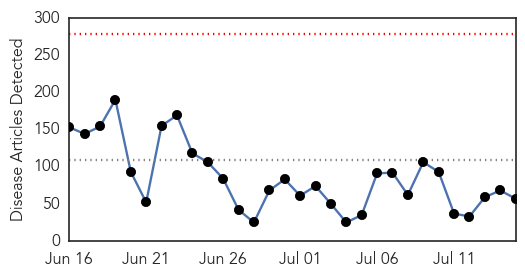
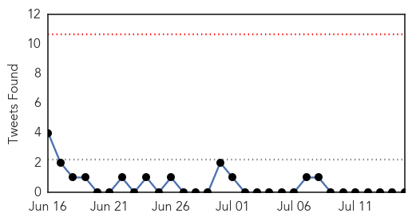
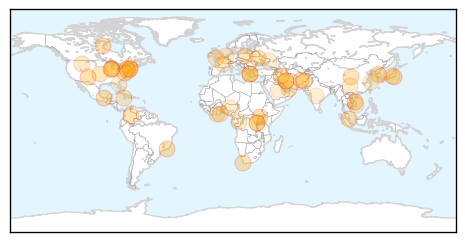
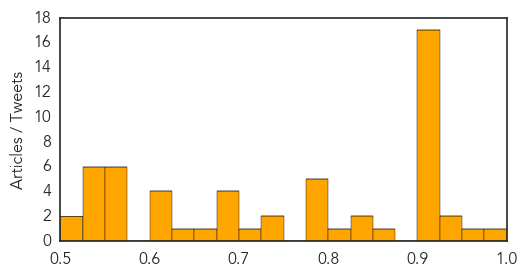

Yellow Fever
30-Day Web Trend
3 alerts, 0 warnings

30-Day Twitter Trend
0 alerts, 0 warnings

Article Locations

Article Confidences

Top Articles:
-
No articles found for Jul 15, 2015
Top Tweets:
-
No tweets found for Jul 15, 2015
Unknown
30-Day Web Trend
0 alerts, 0 warnings

30-Day Twitter Trend
0 alerts, 0 warnings

Article Locations
Article Confidences
Top Articles:
- 0.985
- Fatal skin disease returns to central Vietnam after 3-month hiatus
- 0.971
- The Chosun Ilbo (English Edition): Daily News from Korea
- 0.938
- Malaria outbreak claims 162 lives in 3 months in N.Uganda
- 0.934
- 5 Things To Know About The Rabbit Fever
- 0.917
- Chicago Tribune
- 0.917
- Chicago Tribune
- 0.917
- Chicago Tribune
- 0.917
- Chicago Tribune
- 0.917
- Chicago Tribune
- 0.917
- Chicago Tribune
- 0.917
- Chicago Tribune
- 0.917
- Chicago Tribune
- 0.917
- Chicago Tribune
- 0.917
- Chicago Tribune
- 0.917
- Chicago Tribune
- 0.917
- Chicago Tribune
- 0.917
- Chicago Tribune
- 0.917
- Chicago Tribune
- 0.917
- Chicago Tribune
- 0.917
- Chicago Tribune
- 0.917
- Chicago Tribune
- 0.866
- HIV/Aids
- 0.837
- African swine fever: EFSA recommends combined containment measures
- 0.833
- S. Korea reports no new infections in 10 days
- 0.824
- GBS bacterial infection 'unusual' for healthy adults, doctors say, Health News & Top Stories
- 0.791
- Lab coats should not be worn everywhere
- 0.788
- Health officials address bacteria concerns
- 0.785
- EAC deploys Regional Medical Support Team to Burundian refugees in Rwanda
- 0.783
- Deworming campaign improves child health, school attendance in Rwanda
- 0.782
- High-risk areas for Lyme disease growing, CDC says
- 0.745
- Study shows spread of high-risk lyme disease areas
- 0.735
- Bilharzia cases increases in Prestea
- 0.704
- Stop stealing water from health facilities, regional director pleads
- 0.692
- Cervical cancer killing more women
- 0.687
- Watch out for swimmer's itch this summer -- organisms reported in Willow Creek Reservoir near Augusta
- 0.682
- Bilharzia Cases Increases In Prestea – Daily Guide Ghana
- 0.679
- Almost 300 people try to sue Toby Cavery over outbreak of a vomiting bug in Exeter
- 0.671
- New medical health officer at Prairie North
- 0.649
- Sorry, deze pagina kon niet gevonden worden.
- 0.624
- Efficacy Results of Otsuka’s Delamanid (Deltyba™) for Extensively Drug-Resistant Tuberculosis (XDR-TB) Published in the New England Journal of Medicine
- 0.620
- Smart shots bring Nigeria to brink of polio eradication
- 0.617
- Supersized Hospitals In China Still Struggling With Patient Numbers
- 0.603
- Offre d'emploi industrie pharmaceutique
- 0.568
- The Caledonian-Record
- 0.564
- Korean meetings industry stays strong in face of threat from MERS
- 0.564
- Ukraine: UNICEF appeals to restore damaged water facilities for 1.3 million people
- 0.562
- Early encephalitis outbreak worries Kamrup(R) officials
- 0.557
- EEE confirmed in Madison County mosquito pool - Story
- 0.551
- UN delivers urgent supplies to Aden
- 0.549
- South Korea drops as Chinese ...｜Markets｜WCT
Showing top 50 articles...
Top Tweets:
- 0.720
- RT: NEWS SCAN: Lyme disease spread; Antibiotic-resistant pneumonia; Flu vaccine patch tested http://t.co/T2de9aVLVN